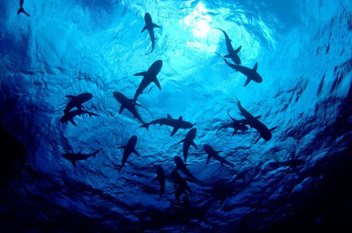

Tubarões
"Tubarão é um nome popular usado para nomear um tipo de peixe do grupo dos condrictes, ou seja, dos que possuem esqueleto predominantemente formado por cartilagem. Os tubarões são bastante conhecidos, principalmente, como grandes predadores, mas essa característica não pode ser aplicada a todos os representantes desse grupo de animais."Fonte: https://brasilescola.uol.com.br/animais/tubarao.htm

Crédito da Imagem: shutterstock
Tartarugas marinhas
- O termo tartaruga pode se referir a todos os animais da ordem dos quelônios, que inclui jabutis e cágados.
- Existem apenas sete espécies de tartarugas marinhas no mundo, e todas estão ameaçadas de extinção.
- As tartarugas marinhas voltam à terra poucas vezes, apenas para desovar nas praias onde nasceram.
- As tartarugas marinhas podem comer de tudo, desde plantas até animais, dependendo da espécie.
- As tartarugas marinhas nadam a mais de 20 quilômetros por hora, mas ficam mais lentas no inverno.
- As tartarugas marinhas são fósseis vivos, pois existem há mais de 100 milhões de anos.
- As tartarugas marinhas não podem falar, mas se comunicam por sons e vibrações.

Crédito da Imagem: https://guiaanimal.net